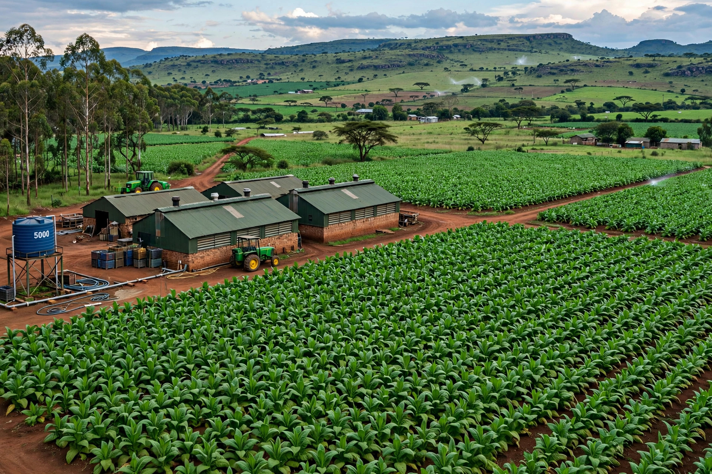

Land reform in Zimbabwe refers to the redistribution of agricultural land from the white minority — who, under colonial legislation, held a disproportionate share of the most fertile land — to black Zimbabweans. Slow and market-based during the 1980s and 1990s, reform was radically accelerated from 2000 under the Fast Track Land Reform Programme of President Robert Mugabe's ZANU government, which seized most white-owned commercial farms, often violently. The programme transformed Zimbabwe's agrarian structure, displacing nearly all of the roughly 4,500 white commercial farmers, but was accompanied by a collapse in commercial agricultural output and a broader economic crisis.
| Land reform in Zimbabwe | |
|---|---|
 Tobacco fields on a commercial farm in Mashonaland, Zimbabwe Commercial farmland in Mashonaland | |
| Period | 1980–present; Fast Track from 2000 |
| Key framework | Lancaster House Agreement (1979); Land Acquisition Act (1992) |
| Farms acquired | About 4,500 white-owned farms (Fast Track) |
| Models | A1 (smallholder), A2 (commercial) |
The Land Apportionment Act of 1930 and the Land Tenure Act of 1969 reserved roughly half of the country's land, including much of the best-watered highveld, for the white minority, confining the black majority to overcrowded "Tribal Trust Lands." Redressing this imbalance was a central promise of the liberation war. The 1979 Lancaster House Agreement, however, entrenched a "willing seller, willing buyer" system for ten years and guaranteed compensation, with Britain and the United States expected to fund purchases.
During the first two decades of independence the government resettled tens of thousands of families on purchased farms, but progress was slow, funding was limited, and targets were repeatedly missed. The Land Acquisition Act of 1992 allowed compulsory purchase with compensation set by the state. Tensions mounted in the late 1990s: in 1997 Britain's development secretary Clare Short wrote that the new Labour government felt no special responsibility for funding land purchases, a letter Mugabe's government treated as a repudiation of Lancaster House obligations, and war veterans — restive over unpaid gratuities — began demanding land.
After the government lost a constitutional referendum in February 2000, groups of war veterans led occupations of white-owned farms; the state then formalised the seizures under the Fast Track Land Reform Programme, expropriating land without the prior payment of compensation. Most of the country's large-scale commercial farms were acquired and subdivided into A1 smallholder plots and A2 commercial units. The process was frequently violent: a number of white farmers and many black farm workers were killed, and hundreds of thousands of farm workers lost their homes and livelihoods.
Production of major export crops, especially tobacco, fell sharply in the 2000s, as did maize output, contributing to food insecurity in a country once a regional breadbasket. The seizures also triggered Western sanctions, capital flight, and the collapse of the Zimbabwean dollar amid hyperinflation. From the 2010s tobacco production partly recovered, increasingly through smallholder farmers financed by contract farming. In 2020 the government of Emmerson Mnangagwa signed a US$3.5 billion compensation agreement with former white farmers for improvements made to the seized land, though payments proceeded slowly, and the land question remains politically charged.
Categories: Land reform · Agriculture in Zimbabwe · Politics of Zimbabwe